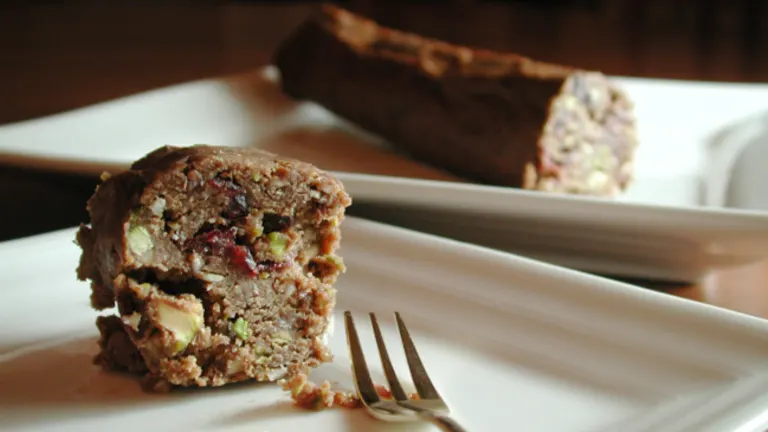

Chocolate Salami

Description
Contrary to the name, there is actually no salami in this recipe. Sorry to disappoint. Instead, enjoy this sweet cookie!
Ingredients
- 1 cup sun dried cherries
- 8 oz semisweet chocolate
- 4 tsps butter
- 8 tsps sugar
- 2 oz finely chopped almonds
- 2 oz finely chopped pistachios
- 6 oz crushed biscotti
- 2 tsps candied orange peel
- 1 oz Grand Marnier
- 3 egg yolks
Steps
- Soak cherries in warm water for about 30 minutes and drain well
- Place chocolate in bowl with butter over a pot of simmering water until melted
- Add sugar, almonds, pistachios, biscotti, drained cherries, orange peel, Grand Marnier and mix well
- Remove from heat, add egg yolks and mix well
- Cool completely before forming a salami shape by rolling mixture in a sheet of wax paper
- Refrigerate 4 hours or overnight
- Slice, serve and enjoy!